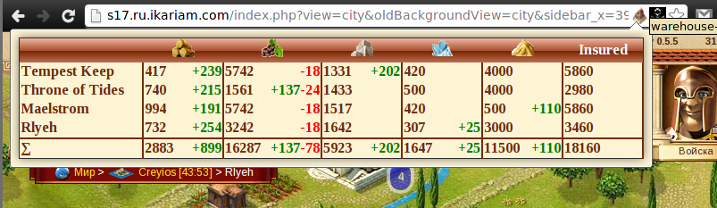

Расширение собирает в таблицу информацию о количестве ресурсов в городах игрока.
Google Chrome напишет что-то вроде "нельзя установить с этого сайта", это нормально, это сообщение следует проигнорировать.chrome://extensions) браузера.warehouse-mastery.crx и перетащите его на страницу расширений.Установить.Установленное расширение будет обновляться автоматически, раз в несколько
часов. Если появится необходимость обновить расширение немедленно, тогда нужно
вверху страницы расширений включить Режим разработчика и нажать кнопку
Обновить расширения. После обновления режим разработчика можно отключить.
